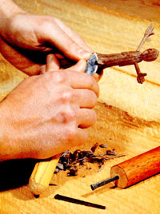

These inexpensive, easy-to-make carving tools can be even better than store-bought ones!
Having a set of fine instruments for carving chunks of wood into shapes that fit your fantasies is as easy as this: Go to your local hardware store and buy some cement nails (also known as cut nails or square-cut nails). Since they come in several sizes, get a few big and a few little ones. That will set you back about four bits. (That's 50 cents to all you young whippersnappers.)
While you're at the shop, also purchase a $3.00 container of propane and-if you don't already have one-a propane torch, which is a fine investment. (It's good, for example, for fixing radiators or unfreezing copper waterlines.) Or, if money is tight, borrow the torch from a friend.
Back at home, round up a pair of pliers, a fairly heavy hammer, that little piece of railroad iron you always thought would come in handy as an anvil, and a tin can of water. Then fire up the torch and, holding one of the nails with the pliers, heat the head redhot. The other end, the point, will later go into your tool's wooden handle. (In fact, you might want to epoxy the nail into a pre-drilled hole in, say, a hunk of broomstick before shaping it.) Beat the head flat with the hammer. Heat again and beat again until it looks like it's thin enough to have possibilities. (To form the round "spoon" of a gouge-type tool, beat it into a concave curve, or around a convex curve, on your anvil-and if you've only whittled with a pocketknife, you can't even imagine how handy it is to have a gouge as well.) Let the steel cool slowly, then use a bastard file to produce the shape you desire.
Now you'll want to heat the same metal until it's glowing orange. If it only gets red, no matter how high you turn up the fire, set the gas bottle in a pan of hot water for a minute or so to activate the fuel. Make sure, though, that this water is no hotter than you can put your hands into. Then, when the business-end of your future cutting tool is nice and orange, drop it into the water to harden it. (You've probably heard that you have to "draw the temper" after quenching if you don't want brittle steel, but it's not important in this case, because you won't be putting that much stress on these tools. Even so, you shouldn't use a file to sharpen this homemade blade after quenching it or you could ruin the file.)
If you haven't already affixed a handle, cut a few inches off an old broomstick, drill a hole in it, and epoxy the blade into the hole. (You may also want to shape your handle.)
When you test out this new tool, those big, curly shavings should just zip right off. If they don't, you'll have to sharpen the blade again-this time with a large whetstone. For this task, make sure you have a genuine Carborundum stone. [EDITOR'S NOTE: We've found that Arkansas oilstones work well too.] Simply pretend you're scraping an invisible decal off with the steel. Then, when you think you're close to achieving the edge you want, use the fine side of the stone (or a harder Arkansas), and if you're forming a flat tool, at the very last you can tom the blade over after each rub.
When you can shave with the blade, you have the sharpness you need for some fine whittling. [EDITOR'S NOTE: We've found ceramic stick sharpeners to work well in finishing dished gouges.]
Using this technique, I've made a large knife and a small one . . . big and little gouges . . . and a V-shaped gouge for making t'shaped notches. And you know what? I've had more fun carving with these tools than I ever did with store-bought ones! What's more, counting my time and the gas, I guess they cost me about a dime apiece!
|
 |
|
|